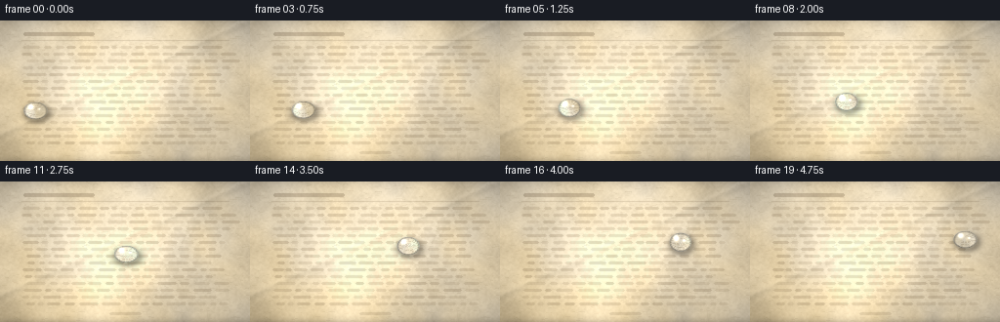
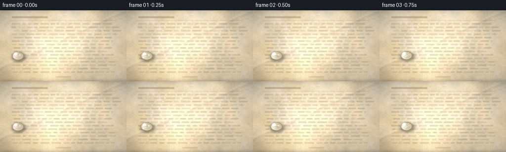
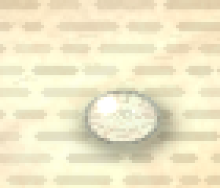

CODING AGENTS AS PIXEL WORLD MODELS
traex/Seed-2.1-Pro-0915 · phygen_040
点击播放 · 原生 RGB 像素
逐轮保存的候选
回放视频、检查图与代码变化。
每份候选均可单独播放。实际图片检查记录在下方工具轨迹中。
候选 01播放与检查图
点击播放 · 原生 RGB 像素


展开代码变化
--- 上一保存版本
+++ 本次保存版本
@@ -0,0 +1,229 @@
+"""Procedural RGB video: a glistening dewdrop sliding across a book page.
+
+Pure numpy/PIL rendering. Run: python generate.py
+"""
+import numpy as np
+from PIL import Image, ImageDraw, ImageFilter
+
+import artifact_io
+
+W, H = 256, 144
+N_FRAMES = 20
+FPS = 4.0
+CASE_DIR = "."
+
+
+# --------------------------------------------------------------- background
+def value_noise(cols, rows, seed):
+ r = np.random.default_rng(seed)
+ small = r.random((rows, cols)).astype(np.float32)
+ img = Image.fromarray((small * 255).astype(np.uint8))
+ img = img.resize((W, H), Image.BICUBIC)
+ return np.asarray(img, dtype=np.float32) / 255.0
+
+
+def fbm(grids, seed_base):
+ out = np.zeros((H, W), np.float32)
+ for i, (grid, amp) in enumerate(grids):
+ cols = max(2, int(round(W / grid)))
+ rows = max(2, int(round(H / grid)))
+ out += (value_noise(cols, rows, seed_base + i) - 0.5) * amp
+ return out
+
+
+def build_page():
+ base = np.array([226, 209, 176], np.float32)
+
+ broad = fbm([(64, 1.0), (28, 0.6), (12, 0.32), (5, 0.18), (2, 0.10)], 11)
+ fine = fbm([(2.2, 0.5), (1.1, 0.35)], 77)
+ tint = fbm([(48, 1.0), (20, 0.5)], 233)
+
+ page = (base[None, None, :]
+ + broad[..., None] * np.array([30, 28, 24], np.float32)
+ + fine[..., None] * 16.0
+ + tint[..., None] * np.array([10, 2, -14], np.float32))
+
+ yy, xx = np.mgrid[0:H, 0:W].astype(np.float32)
+
+ # Key light glow upper-left and a soft vignette.
+ glow = 1.0 + 0.10 * np.exp(-(((xx - 70) ** 2) / (2 * 150.0 ** 2)
+ + ((yy - 20) ** 2) / (2 * 120.0 ** 2)))
+ dist = np.hypot((xx - 128) / 150.0, (yy - 72) / 95.0)
+ vignette = np.clip(1.08 - 0.22 * dist ** 2, 0.82, 1.08)
+ page *= (glow * vignette)[..., None]
+
+ # Soft diagonal paper crease: dark valley then bright crest.
+ d = (xx * 0.42 + yy * 0.91 - 108.0) / 3.2
+ page *= (1.0 - 0.05 * np.exp(-d ** 2))[..., None]
+ d2 = (xx * 0.42 + yy * 0.91 - 104.5) / 2.4
+ page += 7.0 * np.exp(-d2 ** 2)[..., None]
+
+ page = np.clip(page, 0, 255)
+
+ # Detail layer: fibers, faint printed word bars, page furniture.
+ layer = Image.new("RGBA", (W, H), (0, 0, 0, 0))
+ dr = ImageDraw.Draw(layer)
+
+ fr = np.random.default_rng(901)
+ for _ in range(420):
+ x = fr.uniform(0, W)
+ y = fr.uniform(0, H)
+ ang = fr.uniform(-0.25, 0.25)
+ ln = fr.uniform(1.5, 6.0)
+ col = (int(120 + fr.uniform(-15, 15)),
+ int(98 + fr.uniform(-12, 12)),
+ int(60 + fr.uniform(-10, 10)),
+ int(fr.uniform(8, 22)))
+ dr.line([(x, y), (x + np.cos(ang) * ln, y + np.sin(ang) * ln)],
+ fill=col, width=1)
+
+ tr = np.random.default_rng(303)
+ ink = (96, 74, 46)
+ for y in np.arange(26, 128, 7.0):
+ x = 22 + tr.uniform(0, 6)
+ margin_r = 234 + tr.uniform(-8, 6)
+ while x < margin_r - 8:
+ wlen = tr.uniform(5, 20)
+ if x + wlen > margin_r and tr.random() < 0.7:
+ break
+ dr.rounded_rectangle([x, y, x + wlen, y + 1.7], radius=1,
+ fill=ink + (int(tr.uniform(26, 52)),))
+ x += wlen + tr.uniform(2.5, 5.5)
+
+ dr.rounded_rectangle([24, 12, 96, 15], radius=1.5, fill=(80, 60, 38, 60))
+ dr.line([(22, 20), (234, 20)], fill=(90, 70, 44, 38), width=1)
+ dr.rounded_rectangle([112, 134, 144, 136], radius=1, fill=(90, 70, 44, 40))
+
+ layer = layer.filter(ImageFilter.GaussianBlur(0.35))
+ page_img = Image.fromarray(page.astype(np.uint8)).convert("RGBA")
+ page_img.alpha_composite(layer)
+
+ arr = np.asarray(page_img.convert("RGB"), np.float32)
+ top_sh = np.clip(1 - yy / 10.0, 0, 1) ** 2
+ bot_sh = np.clip((yy - (H - 9)) / 8.0, 0, 1) ** 2
+ arr *= (1 - 0.10 * top_sh - 0.13 * bot_sh)[..., None]
+ return np.clip(arr, 0, 255).astype(np.uint8)
+
+
+# ----------------------------------------------------------------- droplets
+def bilinear_sample(img, x, y):
+ h, w = img.shape[:2]
+ x = np.clip(x, 0, w - 1.001)
+ y = np.clip(y, 0, h - 1.001)
+ x0 = np.floor(x).astype(np.int32)
+ y0 = np.floor(y).astype(np.int32)
+ x1 = np.minimum(x0 + 1, w - 1)
+ y1 = np.minimum(y0 + 1, h - 1)
+ fx = (x - x0)[..., None]
+ fy = (y - y0)[..., None]
+ return (img[y0, x0] * (1 - fx) * (1 - fy)
+ + img[y0, x1] * fx * (1 - fy)
+ + img[y1, x0] * (1 - fx) * fy
+ + img[y1, x1] * fx * fy)
+
+
+def smoothstep(e0, e1, x):
+ t = np.clip((x - e0) / (e1 - e0), 0, 1)
+ return t * t * (3 - 2 * t)
+
+
+def drop_position(u):
+ x = 36 + 184.0 * u ** 1.25
+ y = 92 - 30.0 * u + 5.0 * np.sin(2 * np.pi * u * 0.9)
+ return float(x), float(y)
+
+
+def render_frame(page, fi):
+ u = fi / (N_FRAMES - 1)
+ cx, cy = drop_position(u)
+
+ wob = 1.0 + 0.05 * np.sin(2 * np.pi * u * 2.0 + 0.6)
+ rx = 12.5 * wob
+ ry = 9.6 / wob
+
+ frame = page.astype(np.float32)
+ yy, xx = np.mgrid[0:H, 0:W].astype(np.float32)
+
+ # Wet trail left along the path.
+ sub = np.linspace(0, u, max(2, int(u * 70)))
+ if len(sub) > 1:
+ trail = np.zeros((H, W), np.float32)
+ for su in sub[:-1]:
+ tx, ty = drop_position(su)
+ age = 1 - su / max(u, 1e-6)
+ qx = (xx - tx) / (rx * 0.55)
+ qy = (yy - ty) / (ry * 0.5)
+ trail = np.maximum(trail,
+ 0.10 * (1 - age) ** 1.2
+ * np.exp(-(qx ** 2 + qy ** 2) * 1.4))
+ frame *= (1 - 0.16 * trail)[..., None]
+ frame += (trail * 14)[..., None]
+
+ # Soft contact shadow.
+ qs = np.hypot((xx - (cx + 1.6)) / (rx * 1.32),
+ (yy - (cy + 2.6)) / (ry * 1.25))
+ sh = 0.30 * np.exp(-((qs - 0.62) ** 2) / 0.10) * (qs < 1.25)
+ frame *= (1 - sh)[..., None]
+
+ dx = xx - cx
+ dy = yy - cy
+ ex = dx / rx
+ ey = dy / ry
+ q = np.hypot(ex, ey)
+ inside = q < 1.0
+
+ z = np.sqrt(np.clip(1.0 - q ** 2, 0, 1))
+ nn = np.hypot(np.hypot(ex, ey) * z, z) + 1e-6
+ nx = ex * z / nn
+ ny = ey * z / nn
+ nz = z / nn
+
+ # Refraction: dome displaces sampled texels toward the centre.
+ A = 7.5
+ ux = np.where(q > 1e-6, dx / (q + 1e-6), 0.0)
+ uy = np.where(q > 1e-6, dy / (q + 1e-6), 0.0)
+ offset = A * q * z
+ seen = bilinear_sample(page, cx + dx - ux * offset,
+ cy + dy - uy * offset).astype(np.float32)
+
+ L = np.array([-0.48, -0.62, 0.62], np.float32)
+ diff = np.clip(nx * L[0] + ny * L[1] + nz * L[2], 0, 1)
+
+ out = seen * np.array([0.965, 0.985, 1.02], np.float32)
+ out += (diff[..., None] - 0.5) * np.array([10, 12, 16], np.float32)
+
+ rim_dark = smoothstep(0.70, 1.0, q)
+ out *= (1 - 0.40 * rim_dark[..., None])
+ fres = smoothstep(0.82, 1.0, q) ** 2
+ out += (fres * 58)[..., None] * np.array([0.8, 0.9, 1.0], np.float32)
+
+ ao = smoothstep(0.78, 1.0, q) * smoothstep(-0.1, 0.7, ey)
+ out *= (1 - 0.22 * ao)[..., None]
+
+ bounce = np.exp(-((q - 0.80) ** 2) / 0.012) * smoothstep(0.0, 0.5, ey)
+ out += (bounce * 20)[..., None]
+
+ shimmer = 0.9 + 0.1 * np.sin(fi * 0.9)
+ g1 = np.exp(-(((dx + 0.38 * rx) / (rx * 0.20)) ** 2
+ + ((dy + 0.44 * ry) / (ry * 0.26)) ** 2))
+ g2 = np.exp(-(((dx - 0.30 * rx) / (rx * 0.10)) ** 2
+ + ((dy + 0.18 * ry) / (ry * 0.10)) ** 2))
+ sparkle = 0.6 + 0.4 * np.sin(fi * 1.7)
+ out += (g1 * 190 * shimmer)[..., None]
+ out += (g2 * 120 * shimmer * sparkle)[..., None]
+
+ alpha = smoothstep(1.0, 0.90, q)
+ comp = frame * (1 - alpha[..., None]) + out * alpha[..., None]
+ comp = np.where(inside[..., None], comp, frame)
+ return np.clip(comp, 0, 255).astype(np.uint8)
+
+
+def main():
+ page = build_page()
+ frames = np.stack([render_frame(page, i) for i in range(N_FRAMES)])
+ artifact_io.save(frames, CASE_DIR)
+ print(f"saved {len(frames)} frames {W}x{H} @ {FPS} fps")
+
+
+if __name__ == "__main__":
+ main()
可观测工具轨迹
实际执行的命令与返回图片。
命令 1exit 0
/bin/bash -lc 'cat prompt.txt GENERATION_RULES.md task_spec.json 2>/dev/null; ls -la'
命令 2exit 0
/bin/bash -lc 'cat artifact_io.py'
命令 3exit 1
/bin/bash -lc 'cd . && python generate.py && ls -la'
命令 4exit 1
/bin/bash -lc 'cd . && python generate.py && ls -la'
命令 5exit 0
/bin/bash -lc "cd . && sed -n '108,114p' generate.py | cat -A | head"
命令 6exit 0
/bin/bash -lc 'cd . && python generate.py && ls -la'
命令 7exit 0
/bin/bash -lc "cd . && python -c \"
from PIL import Image
im = Image.open('frames/10.png')
im.crop((80, 40, 150, 100)).resize((280, 240), Image.NEAREST).save('.tmp/zoom10.png')
im = Image.open('frames/00.png')
im.crop((10, 60, 80, 120)).resize((280, 240), Image.NEAREST).save('.tmp/zoom00.png')
\""视觉工具实际返回图片 1

视觉工具实际返回图片 2

保存候选 1 份；完成命令 7 次；可验证图片返回 2 张。原始 API 响应与完整日志保留在本地。